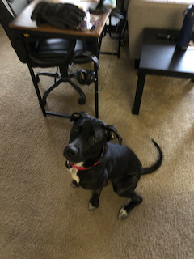

Minnie is a black Labrador Retriever mix. She was found as a stray dehydrated and underweight on December 29, 2020 and placed at Great Plains SPCA. She was fostered by me (Matthew) in Overland Park, Kansas starting on January 12, 2021 and then adopted on February 14, 2021.
Although she was said to be 5 years old, she has the energy and playfulness of a puppy. She's been a very good dog.
Microchip: 981020039017263 (Petlink)
If found call, 913-671-0636.
